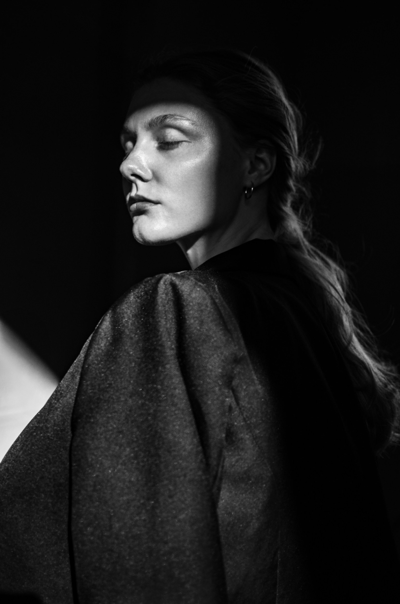

КТО МЫ
Patch Sign [патч сайн] - душа ай-ти, которую можно
показать и увидеть. Мы изготавливаем нашивки
для тряпичных изделий и стикеры для всего остального.
Узнаваемые символы мощнейших идей и проектов
на любимых предметах гардероба и гаджетах.
Разработка, производство и вдохновение базируются
в единственном городе России на букву "Й" - Йошкар-Ола.

Присоединяйся к нам, чтобы не пропустить последние
новинки и много чего интересного
